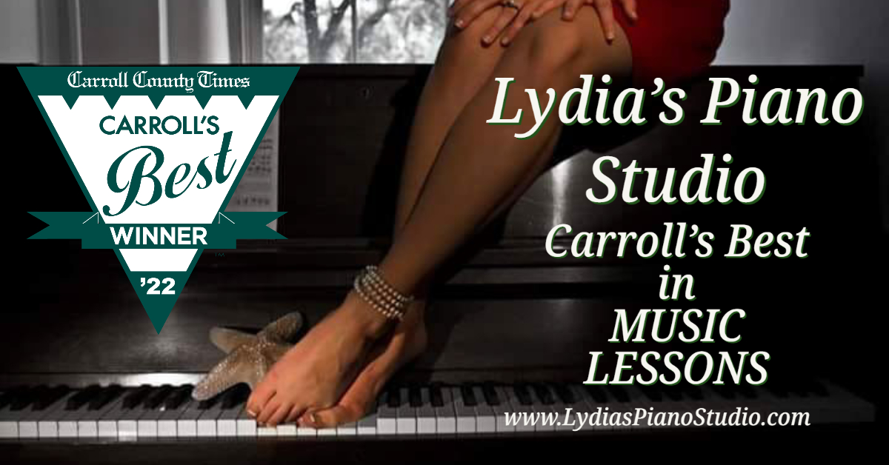

My name is Lydia Bandy
üë©‚Äçüíª Aspiring Full Stack Developer | Passion for Coding | Open to New Opportunities | #TechEnthusiast #Harpist #MusicInTech #Pianist #MusicLessons #Musician #Composer
üë©‚Äçüíªüí° Ready to Code: I'm embarking on an exciting career transition, bringing my passion, dedication, and problem-solving skills to the world of computer programming. I'm actively seeking opportunities as a Full Stack Developer and am committed to continuous learning and growth in this dynamic field. Let's connect and explore how my unique background can infuse creativity and innovation into your tech team!
Current Projects
-
Albert Bandy
Built a small webpage for my Dad, Albert Bandy, for his intarsia projects using HTML, CSS, and Web Hosting
-
Hangman Game
Built a Hangman game with Javascript, HTML, CSS based on the hit show the Office
üìö Background: For almost two decades, I've been a sought-after music educator, pianist, and harpist in the DMV area. As the owner of Lydia's Piano Studio, I honed essential skills while managing my business with over 55 students. In 2011, I released my acclaimed piano album, "PIANO PEARLS," available on all major streaming platforms. I continue to perform at diverse venues, including libraries, churches, airports, 5-star hotels, and Baltimore-area restaurants.
üéº Therapeutic Music Advocate: In 2019, I pioneered a therapeutic music program at Bridge Life Healthcare (formerly Carroll County Hospital). There, I provided ambient harp music for patients, visitors, and nurses at the Hospice Dove House. This initiative has seen remarkable success, allowing me to offer a diverse repertoire of PIANO & CELTIC HARP music and compose original piano pieces for various media. My services are available for cocktail parties, weddings, and special events.
üåç Beyond the Notes: Beyond my musical passions, I have a deep love for technology and a knack for creativity. With 21 COUNTRIES explored, I'm constantly learning and embracing new experiences. I'm an avid Dungeons and Dragons enthusiast, a dedicated gamer, and I enjoy exploring 3-D Printing and other creative pursuits. My ultimate goal is to combine my love for tech and creativity to build a video game.

-
I am a professional harpist and pianist and music teacher.
-
I was rated Carroll’s Best for music lessons in 2022 and in the Top 5 piano teachers of Baltimore.
-
I also am a composer and can be found on Spotify and other streaming platforms.